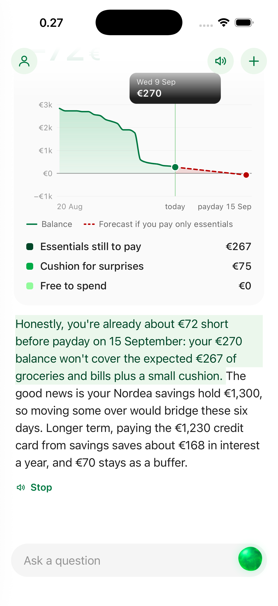

Meet Penni
Ask your money.
Every day, your money
leaves footprints.
leaves footprints.
Most of us never see where they lead.
Basket 1 · Essential, regular
Must-haves,
every month
every month
€2,510 a month
Housing, groceries, bills and transport.
Basket 2 · Essential, unexpected
Surprises you
can't skip
can't skip
€500 a month
A broken washing machine. A dentist.
Basket 3 · Discretionary
Everyday
extras
extras
€455 a month
Coffee, taxis, shopping. The part you steer.
Essential, regular · 72%
14%
13%


Just ask.
By voice or text. A clear answer
and a chart, in seconds.
and a chart, in seconds.
How much can I spend before payday?
Your whole picture.
Connect other banks, read-only.
Penni
Ask your money.